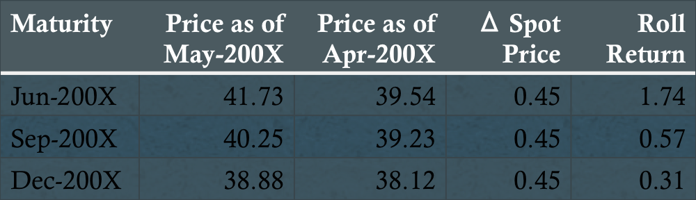
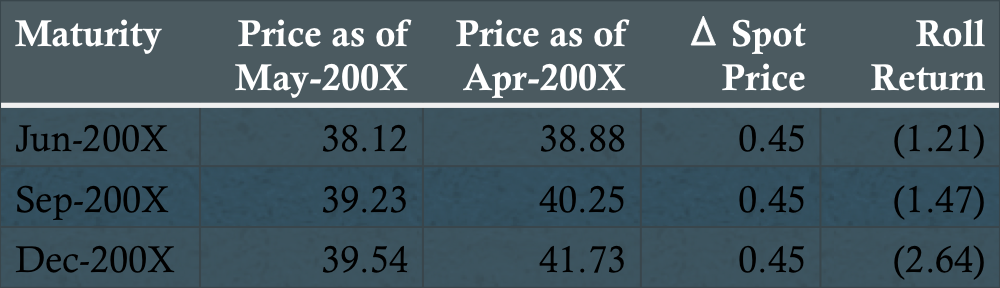

Created for Alchemists Academy by MacLaneWilkison
Definition: An ownership interest in a private company
Demand: Early-stage (seed/start-up) and later-stage
Supply: Angels, venture capital firms, corporate venturing
Real property consisting of the land and buildings on it, along with its natural resources
Smoothed vs. unsmoothed
Definition: A tangible asset that is relatively homogeneous in nature
Backwardation
Contango
Definition: A private, actively managed pooled investment vehicle
Many different ways to classify a hedge fund strategy!
Definition: Private pooled investment vehicles that invest in cash, spot, and derivative markets and employ leverage in a variety of trading strategies
Definition: The securities of companies that are in financial distress or near bankruptcy
Requires specialist expertise in credit analysis, turnarounds, business valuation, and bankruptcy proceedings